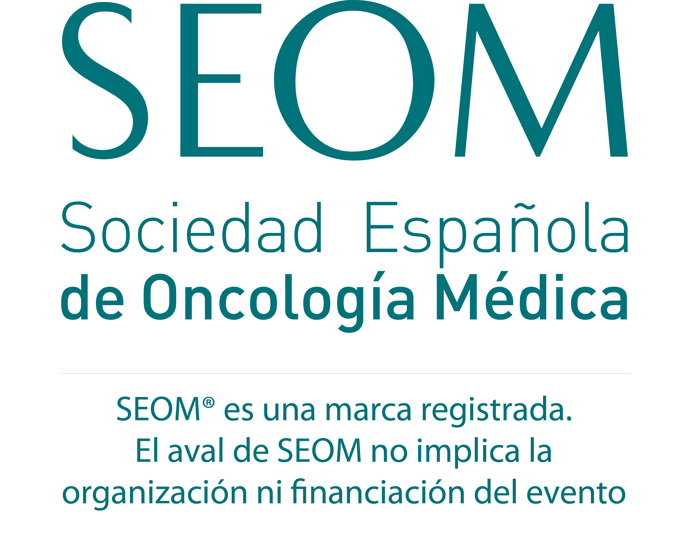

State of the Art in Nasopharyngeal Cancer: Self-Assessment Program
Hacia una Inmunología
de Precisión
Biomarcadores, Secuenciación y Humanismo. El programa definitivo para liderar la era de la inmunoterapia anti-PD-1 y el manejo integral del tumor nasofaríngeo.
"Más allá de la supervivencia global, debemos preservar la identidad, la voz y la funcionalidad del paciente."
Un Cambio de Paradigma:
Del Platino a la Inmunoterapia Anti-PD-1.
La Justificación Clínica en el Escenario Avanzado.
La vanguardia oncológica exige actualizar competencias hoy.
Metodología UX y Certificación Oficial.
Un entorno virtual de aprendizaje diseñado para garantizar la adquisición de competencias, exigiendo una navegación secuencial requerida por la Comisión de Formación Continuada.
-
school
Evaluación Formativa Continua
Cuestionarios interactivos (Self-Assessments) al final de cada módulo con feedback razonado referenciado a la evidencia clínica.
-
auto_stories
Contenidos de Clase Mundial
Malla curricular basada estrictamente en ASCO, JCO Precision Oncology y Guías Europeas/Nacionales (SEOM/ESMO).
-
bolt
Flexibilidad Asíncrona
Estudio adaptativo 100% online con soporte audiovisual avanzado para agendas médicas saturadas.
Objetivos del Programa.
Capacitar al especialista a través de tres dimensiones fundamentales para la nueva era de la oncología de cabeza y cuello.
Dimensión Molecular y Diagnóstica
Comprender la patogénesis molecular del CNF, la latencia viral del EBV y aplicar e interpretar la monitorización de la carga viral plasmática (EBV-DNA) como biomarcador clave.
Dimensión Clínica y Secuenciación
Analizar la evidencia de los ensayos fase III de inmunoterapia anti-PD-1 y establecer algoritmos de decisión adaptados para la primera línea avanzada del triplete inmuno-quimioterápico.
Dimensión Humanista
Manejar toxicidades inmunomediadas (irAEs) y aplicar Toma de Decisiones Compartida (SDM) para preservar la calidad de vida ante secuelas como xerostomía y disfagia.
Capacitación Multidisciplinar.
Un abordaje integral frente al tumor nasofaríngeo.
Oncólogos Médicos
Responsables del diseño del tratamiento sistémico en primera línea y del manejo experto de los eventos adversos inmunomediados.
ORL y Onc. Radioterápica
Claves en el abordaje locorregional, seguimiento de secuelas previas y la interacción de la toxicidad radiónica con la inmunoterapia.
Farmacia Hospitalaria
Validación y preparación de anticuerpos monoclonales anti-PD-1 y monitorización de interacciones o reacciones infusionales.
Médicos Residentes (MIR)
Garantizar la asimilación del nuevo paradigma de la inmuno-oncología y el humanismo desde los inicios de su práctica clínica.
El Currículum Científico.
3 Módulos de Excelencia.
Estructurado bajo los máximos estándares UX para CFC: Scientific Core, Critical Debate, Practice Insights, casos clínicos y multimedia.
Comprendiendo la patogénesis, la asociación con el Virus de Epstein-Barr (EBV) y el uso clínico de la carga viral (EBV-DNA) y el estatus PD-L1.
Estructura del Módulo (8 Apartados)
- play_arrow Executive Brief: La huella biológica del Epstein-Barr en la nasofaringe.
- play_arrow Scientific Core: Microambiente inflamatorio y justificación inmunológica.
- play_arrow Critical Debate: ¿Es PD-L1 un biomarcador restrictivo en CNF?
- play_arrow Further Readings: Estandarización de la monitorización de EBV-DNA (ASCO).
- play_arrow Practice Insights: Algoritmo de diagnóstico y estadificación inicial en consulta.
- play_arrow Clinical Cases: Confirmación histológica y EBV-DNA en paciente no endémico.
- play_arrow Self-Assessment: Autoevaluación interactiva sobre etiología y latencia viral.
- play_arrow Multimedia: Animación médica 3D de la interacción EBV y células T.
Análisis crítico de los ensayos fase III que consolidan al triplete inmuno-quimioterápico (anti-PD-1) como el nuevo estándar de cuidado avanzado.
Estructura del Módulo (8 Apartados)
- play_arrow Executive Brief: Supervivencia y tasas de respuesta en primera línea avanzada.
- play_arrow Scientific Core: Ensayos pivotales controlados frente al estándar quimioterápico.
- play_arrow Critical Debate: Extrapolación de datos asiáticos a la práctica clínica nacional.
- play_arrow Further Readings: Posicionamiento terapéutico y guías actualizadas SEOM/ESMO.
- play_arrow Practice Insights: Manejo de infusiones, dosificación y criterios de elegibilidad.
- play_arrow Clinical Cases: Diseño del tratamiento sistémico tras progresión a QRT.
- play_arrow Self-Assessment: Evaluación interactiva sobre hazard ratios y supervivencia (SLP/SG).
- play_arrow Multimedia: Gráficos dinámicos interactivos de curvas Kaplan-Meier.
Capacitación en el manejo proactivo de irAEs, soporte psicosocial frente a secuelas de cabeza y cuello (disfagia, xerostomía) y prevención del burnout.
Estructura del Módulo (8 Apartados)
- play_arrow Executive Brief: Diferenciando toxicidad hematológica de inmunomediada.
- play_arrow Scientific Core: Manejo de neumonitis, hipotiroidismo y rash cutáneo.
- play_arrow Critical Debate: El desafío crónico: Secuelas anatómicas y su impacto identitario.
- play_arrow Further Readings: Protocolos de soporte ASCO/MASCC y Medicina Narrativa.
- play_arrow Practice Insights: Checklist clínico en Hospital de Día para monitorización de irAEs.
- play_arrow Clinical Cases: Simulación (Role Play) comunicando suspensión por toxicidad (SPIKES).
- play_arrow Self-Assessment: Gradación de toxicidad mediante escala CTCAE v5.0.
- play_arrow Multimedia: Entrevista dual Oncóloga-Paciente ("Voces Hipocráticas") sobre disfagia.
Dirección Académica Institucional.
KOLs Nacionales en Oncología de Cabeza y Cuello.
Dr. Pere Gascón
Catedrático, director de la Cátedra CELLEX de Oncología y del Conocimiento Multidisciplinar. Co-Director del Laboratorio de Oncología Molecular y Translacional de la Universitat de Barcelona. Emblema de la Medicina Hipocrática.
Dr. Antonio Rueda
Jefe de Servicio de Oncología Médica del Hospital Universitario Virgen de la Victoria y H. Regional de Málaga. Coordinador y primer autor de la Guía Clínica de Cáncer de Nasofaringe de la SEOM-TTCC.
Dr. Ricard Mesía
Director Científico y Jefe del Dpto. de Oncología Médica del Institut Català d'Oncologia (ICO) Badalona. Presidente de Honor del Grupo Español de Tratamiento de Tumores de Cabeza y Cuello (TTCC).

Hacia un Abordaje
Verdaderamente Integral.
Inmunoterapia de vanguardia, preservando la dignidad humana.
Nuestra propuesta educativa expande el horizonte científico. Dotamos al clínico no solo de los algoritmos más avanzados de inhibición inmune, sino de las habilidades fundamentales para gestionar secuelas funcionales con profunda empatía. Apoye esta vanguardia oncológica.